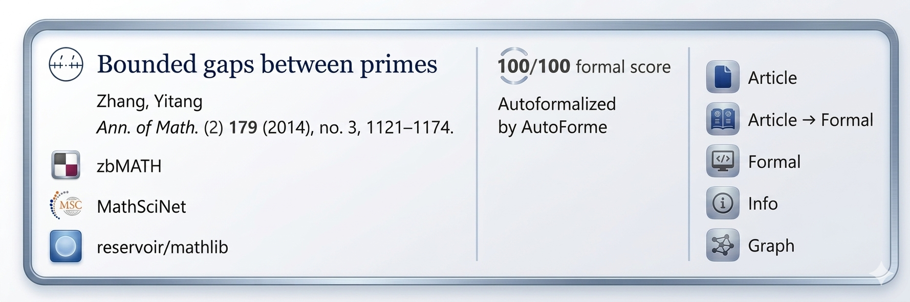

Proposes a bridge-database aligning math publications with Lean mathlib formalizations and a paper-level formalization-coverage score.
Abstract
Mathematical knowledge is split between bibliographic databases (e.g., MathSciNet, zbMATH Open) and formal proof libraries (e.g., Lean mathlib), preventing unified access between published results and their formalizations. We propose a relational bridge-database that aligns publication metadata with formal artifacts, providing an interoperability layer between mathematical literature and machine-verifiable proofs. We introduce a paper-level formalization score that measures how much of a publication is covered in formal systems. As a feasibility study, we show how such scores can be estimated via cross-document alignment between informal texts and Lean formalizations, enabling large-scale analysis of formalization coverage. This framework is a first step toward integrating bibliographic and formal mathematical ecosystems into scalable, machine-actionable knowledge graphs linking publications to formal proof objects.
Problem
Mathematical knowledge is split between bibliographic databases (MathSciNet, zbMATH Open) and formal proof libraries (Lean mathlib), with no unified way to query which published results have been formalized or to what extent.
Approach
The authors propose a relational bridge-database that aligns publication metadata with formal artifacts in Lean, providing an interoperability layer. They define a paper-level formalization score S(P_i) measuring the fraction of a paper's statements that have been formalized. A feasibility study uses LLM-based cross-document alignment between informal papers and Lean formalizations to estimate these scores automatically.

Figure 3: Proposed interface overview. The reported score is illustrative as of 2026.
Results
Case studies on three papers yield formalization scores of 50%, 100%, and 41.67% respectively, demonstrating that contemporary LLMs (Google Gemini) can independently compute meaningful paper-level formalization scores in a zero-shot setting.